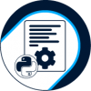
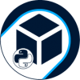
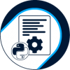
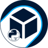

CV/README.md
Hola 👋, soy Bastian Landskron
Soy un apasionado por el estudio y la investigación. Amo la Astronomía, Historia, Ciencias & Lenguas. Me encanta aprender diferentes cosas y especialmente me gusta la investigación en el ámbito de la IA, Machine Learning, Neural Network, Deep Learning & Data Science. Mi lenguaje de programación favorito es Python también tengo conocimientos sobre JS, Html5 & Css.
| Desarrollador Full Stack Junior | Python | JavaScript | Html5 | CSS | AI | Machin Learning | Neural Network | Deep Learning | Scratch | Diseño Grafico | Astronomía 🪐 | Bases de Datos Relacionales y No Relacionales |
🔭 Actualmente estoy trabajando en Algorithmics Global
🌱 Estoy estudiando en Alura Latam
🌱 Estudie en Next_U
👯 Colaboro con Python Chile
👨💻 Todos mis proyectos están disponibles en Blandskron
📫 Cómo contactarme
bastianlandskronfreelancer@gmail.com
TEACHER SCRATCH
Badges
Estudio Virtual
Git
Python
 



Challenge Alura Latam
Experiencia Laboral
Profesor de Programación & Ejecutivo Comercial
Actualidad
Profesor de Scratch
Ejecutivo de Atención al cliente
Descanso Profesional
Desde el año 2020 al 2022
Estudios de Ingles & Desarrollo Web
Técnico Gráfico
Desde el año 2008 al 2020
Areas de trabajo
Maquinarias & Diseño Grafico